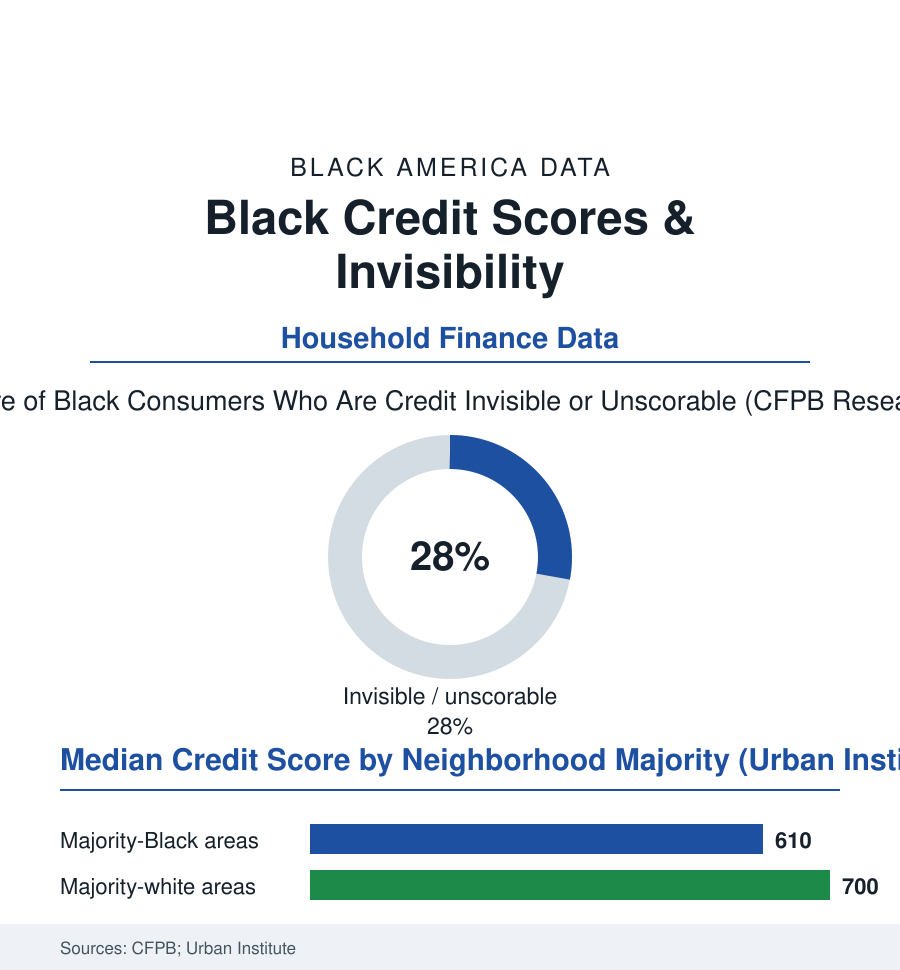

Black Census
The Score: Credit Data and the Three-Digit Gatekeeper
A single number prices Black America's mortgages, cars, insurance, and jobs — and the data show both how the gap is built and what it costs. The credit file.

Three digits, assigned by an algorithm from a file most people never read, set the price of nearly everything in this atlas: the mortgage rate, the car loan, the insurance premium, the apartment, the job offer itself. The credit score's racial data are among the starkest in the household files — median scores in majority-Black neighborhoods running some ninety points below majority-white ones in the Urban Institute's mapping — and a quarter to a third of Black consumers stand outside the system entirely in the CFPB's count. This article reads the credit file.
Invisible, Unscorable, and Priced Accordingly
The Bureau's foundational study named the two outside populations: the credit invisible (no file at the major bureaus — the cash-economy worker, the young adult, the recent immigrant) and the unscorable (a file too thin or too stale to grade), together some forty-five million Americans, with Black consumers represented at roughly one-and-a-half to two times their population share in both categories in the federal data. Invisibility is not neutrality in the system's arithmetic: it is priced as risk wherever the gate requires a number (the apartment of the housing file, the financed car of the transportation file), the manual underwriting that could substitute being the first casualty of every lender's automation. Inside the system, the score distribution's construction is the file's second lesson, and it is historical all the way down: the score prices the past (the missed payments of the income-volatility file, the medical collections of the health file — for years the single largest category of derogatory marks in the Bureau's studies, a health-system artifact sitting in a credit document — the thin files of the unbanked article, the inherited absence of the family credit socialization the wealth file measures), so that yesterday's exclusions compound mechanically into today's price, with the algorithm's neutrality consisting entirely of its indifference to how the inputs were made. The consequences are priced with unusual precision in the mortgage data (every twenty points of score a visible step in the rate sheet — the lifetime interest differential on the median Black family's home loan running to the tens of thousands, the appraisal file's discount and the credit file's surcharge compounding on the same house).
The Reform Shelf
The responses under measurement in the current data run in three directions, and the file owes each its odds: the reporting reforms (the bureaus' removal of most medical collections and paid collections in the recent years' voluntary and regulatory changes — the score gains in the follow-up studies concentrating exactly where the file predicts, among the consumers the medical system had marked; the rent-and-utility reporting pilots, crediting the payment streams the Black household data show are reliably made and historically uncounted — the bureau pilots' measured score gains for thin-file renters the most promising single number in the file), the alternative-data underwriting (the cash-flow models the fintech lenders grade by deposit history instead of bureau history — their approval-rate gains for Black applicants in the academic audits real, their pricing and their own bias the subject of the same audits' cautionary second halves), and the system's defenders' standing answer, which the record must carry: the score, for all its history, predicts default within every population with an accuracy its alternatives have yet to match, and its adoption narrowed the older, purely personal discretion of the loan officer whose file this atlas has also read — the gate automated being, at minimum, a gate that can be audited, its inputs published, its disparities — as this article demonstrates — countable. The argument is therefore not whether to count, but what to count: a file that records the rent and the light bill beside the card will describe Black America's actual reliability more faithfully than the one the bureaus inherited — and the pilots' data suggest the scores know it.
Reading the Credit Data
The score is the census of trust in a society that runs on it — and like the census, it counts what it was built to count. Its racial rows are not a malfunction but a mirror, ground from the inputs of a dozen other files in this atlas. Change the inputs — the income's stability, the rent's recording, the hospital's billing — and the three digits follow, as mechanically as they were made.
More in Black Census
The Black Population of the United States: Size, Definitions, and Distribution
The Black population of the United States totals 52.8 million — 15.4 percent of the nation. How the Census Bureau defines and counts the population, and where it lives.
Black Median Household Income in the United States
Black median household income stands at $56,490 in the Census Bureau's annual income report — how the figure is measured, how it compares, and what drives it.
The Black Poverty Rate: Levels, Children, and the Long Trend
The official Black poverty rate is 17.1 percent — against 11.1 percent nationally and 7.7 percent for non-Hispanic White Americans. How poverty is measured and what the data show.
Source: Consumer Financial Protection Bureau credit invisibility research; Urban Institute credit score data; Federal Reserve; Experian consumer credit reports.